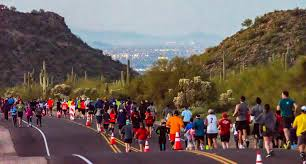

When I was in junior high, my dad began running half marathons in order to lose weight. I played soccer and previously participated in the local 10K turkey trot. Both of us enjoyed running and it became something to bond over.
The Phoenix Half Marathon released a promo that caught our attention. Anyone who finished either the half or full marathon would earn a metal with a golden point. If you finished the race 5 times, the 5 golden points would come together to make a star.
We decided to make it our goal to finish the half marathon from 2016 to 2020. This marked the true beginning of my passion for running.
After a falling out with my coach and team freshman year, my focus turned to running as a competitive sport. Our high school team had promising talent and was a good environment full of kids with good values and a strong work ethic.
I ran cross country all 4 years of high school. It challenged me, and I learned how to overcome physical discomfort as I ran brutal track workouts and grimaced through the difficulty of running a 5K at 100% effort.
After high school, I was sick of running. Well, not really. Being on a cross country team created the accountability and structure that kept me consistent. But I am a pretty inconsistent person and lacked the discipline to run daily on my own.
But during my mission, I saw facebook posts of a college friend who was running marathons at a high level, and it reignited the fire in me to again pursue long distance running. I signed up for a marathon, and am currently preparing for this race.